14. Walk Labyrinths¶
En aquesta pràctica, programarem un joc que consisteix a viatjar diversos laberints des del seu començament fins al punt final abans que el nostre personatge acabi la seva energia.
{kind=link}
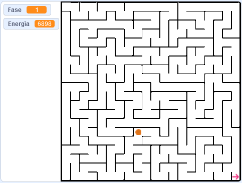
; BR |
Comencem el | Editor_de_scratch |.
; BR |
Premeu el botó d'idioma | Botó-Idioma | A la barra superior i va triar ** espanyol **.
; BR |
Eliminem l'objecte CAT prement a la icona del cub d'escombraries.
; Suprimeix-Gato |
; BR |
A continuació, afegim un personatge nou, una pilota de ** bàsquet **.
Premeu el botó Trieu un objecte | Select-objecte |.
Estem buscant a la secció ** Sports **.
I seleccionem l'objecte ** Bàsquet **.
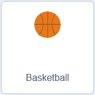
; BR |
Ara crearem la variable ** fase ** que comptarà el nombre de laberints que viatgem. Quan aquesta variable supera els cinc laberints, el programa s’acabarà.
Premeu el botó variable | Botó-Variables |,
Premeu per crear una variable | Botó-Crear-Variable |.
Canviem el nom de la variable a ** fase **
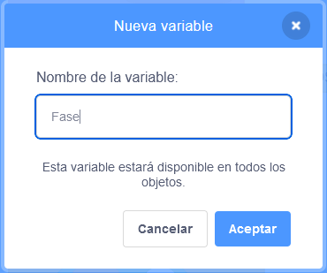
Finalment, feu clic al botó ** acceptar **
; BR |
També crearem la variable ** energia ** que comptarà amb l’energia que tenim per recórrer tots els laberints. Si es buida la variable d’energia, perdrem el joc i el programa s’acabarà.
Premeu el botó variable | Botó-Variables |,
Premeu per crear una variable | Botó-Crear-Variable |.
Canviem el nom de la variable a ** energia **
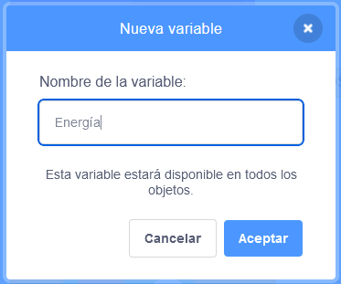
Finalment, feu clic al botó ** acceptar **
; BR |
Creem dos nous blocs anomenats ** mown_x ** i ** mow_y ** que mouran la pilota a la pantalla.
Primer, feu clic als meus blocs | Botó-Misblos |
A continuació, feu clic a Creació d’un bloc | Botó-Crear-Block |
A continuació, canviem el nom del nou bloc a ** mueve_x **
Primer, feu clic als meus blocs | Botó-Misblos |
A continuació, feu clic a Creació d’un bloc | Botó-Crear-Block |
A continuació, canviem el nom del nou bloc a ** mueve_y **
; BR |
Realitzem un programa que mou la pilota en les quatre direccions, consumint energia i rebotant a les parets del laberint de manera que no es pugui creuar.
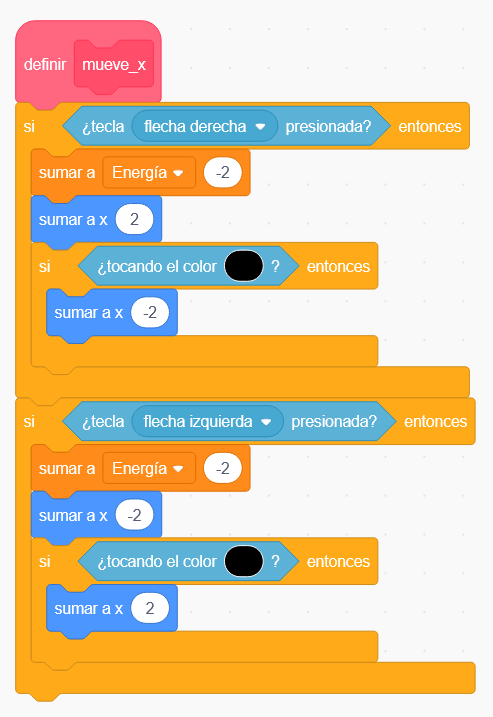
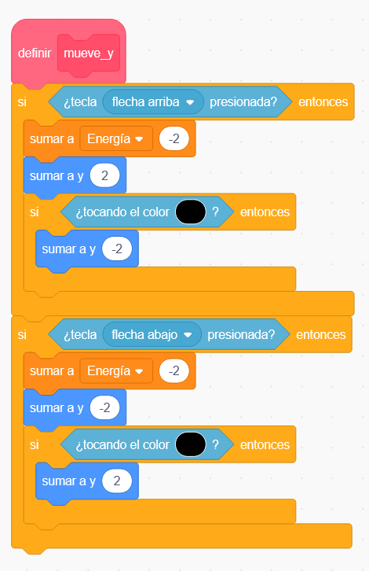
La pilota encara no es mourà perquè necessitem una altra rutina per trucar a les funcions que hem creat.
; BR |
Ara creem un bloc nou, ** Start **, que mostrarà la pilota amb una mida petita al començament del laberint.
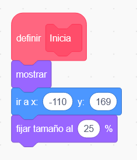
; BR |
Per continuar programant la rutina principal que anomena tots els blocs que hem creat anteriorment.
Encara no podem canviar els antecedents a "sense_energy " perquè encara no s'ha creat aquest fons. No oblideu canviar -ho després de crear el fons.
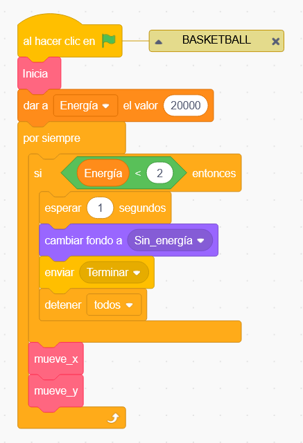
; BR |
Per acabar el programa de pilota, programarem el comportament quan rebem els missatges de ** start ** i ** acabat **.
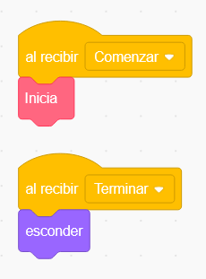
; BR |
Ara canviarem a ** escenari ** i dins de la pestanya Fons crearem els missatges del joc.
Primer seleccionem en fons, pinta un fons.
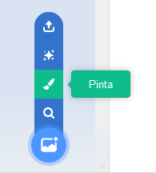
A continuació, amb el text ** ** escrivim el missatge següent a la pantalla.
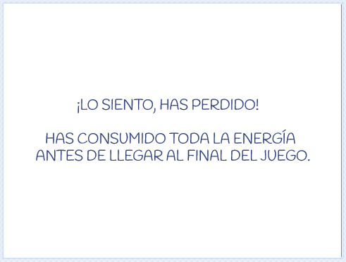
Canvieu el nom de la disfressa a "sense_energy ".
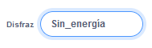
No oblideu modificar el programa de pilota de bàsquet ara que aquest antecedent ja està creat.
; BR |
Ara tornarem a canviar per ** escenari ** i dins de la pestanya Fons crearem més missatges de joc.
Seleccionem en fons, pintem un fons.
A continuació, amb el text ** ** escrivim el missatge següent a la pantalla.
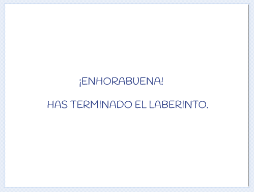
Canviem el nom de la disfressa per "acabat ".
; BR |
Seleccionem de nou per pintar un fons.
A continuació, amb el text ** ** escrivim el missatge següent a la pantalla.
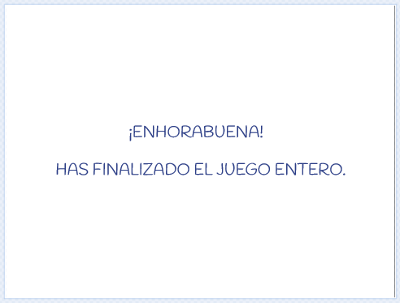
Canviem el nom de la disfressa per "acabat ".
; BR |
Per completar els fons, descarregarem el següent fitxer comprimit que conté diversos laberints al seu interior.
: Descarregueu: `Labyrinths per viatjar. Format postal. <scratch3/scratch3-laberintos.zip> '
Un cop descarregat, obrim el fitxer zip i extreuem tots els fitxers de laberint dins d’una carpeta coneguda.
Podeu extreure tots els fitxers fent clic amb el botó dret del ratolí al fitxer zip i seleccionant el `` Extreu -ho tot ...
; BR |
De nou a l'escenari ** **, dins de la pestanya Fons, importarem els diferents laberints.
Primer seleccionem en fons, ** Carregueu un fons **.
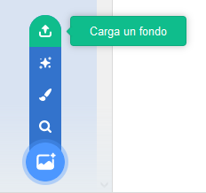
Hem escollit la carpeta on s’han descarregat el fitxer zip anterior i la carpeta on s’han extret els laberints. Pregunteu al vostre professor si no sabeu com continuar en aquest pas.
Un cop a la carpeta Labyrinth, feu clic al primer laberint i premeu el botó `` obert ''.
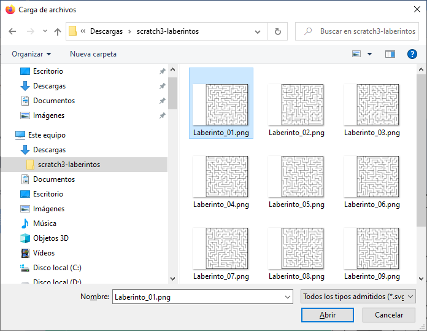
; BR |
Repetim el pas anterior amb els cinc primers laberints.
; BR |
Per continuar, programarem el comportament de l’etapa a la pestanya Codi.
Al començament del programa, establim el valor de la variable de fase en 1 (el número de laberint) i mostrem el primer laberint.
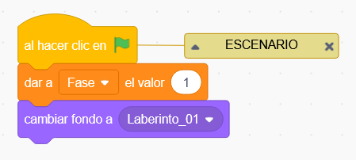
Cada vegada que rebeu el missatge de ** Start ** Un nou laberint, afegiu -ne un a la variable de fase i mostreu el laberint corresponent. Un cop assolits 6 laberints, el programa haurà acabat i podem acabar el programa amb un missatge guanyador.
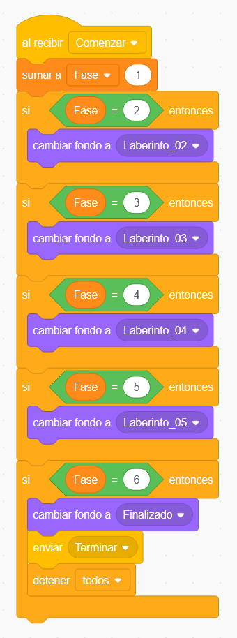
; BR |
Quan arribi aquest punt, només cal definir quan acabi cada laberint. Per aconseguir -ho, afegirem un objecte nou, una fletxa, que enviarà el missatge de llicència acabat quan toqui la pilota de bàsquet.
Afegim un personatge nou, ** una fletxa **.
Premeu el botó Trieu un objecte | Select-objecte |.
Estem buscant a la secció ** tot **.
i seleccionem l'objecte ** Arrow1 **.
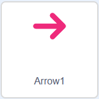
; BR |
Realitzem un programa que mostra la fletxa a la cantonada inferior dreta al començament del programa. També ha de ser sempre detectar si es juga la pilota de bàsquet, per acabar el laberint i començar -ne un de nou.
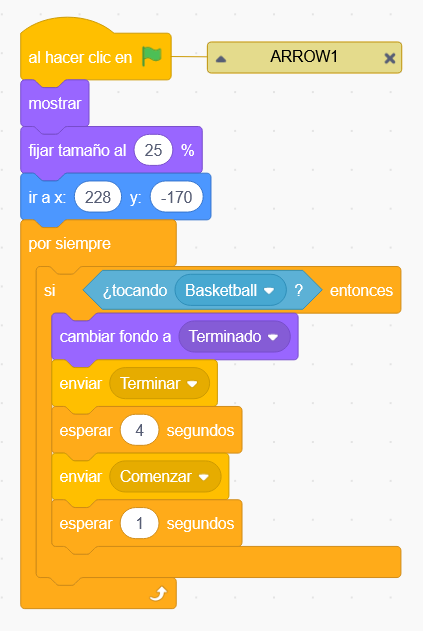
També programarem que la fletxa s’amaga des del final d’un laberint fins que comenci el laberint següent.
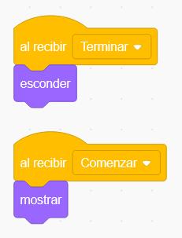
; BR |
Premeu la bandera verda | Flag-Verde | Per provar el funcionament del programa.
; BR |
{kind=link}
{kind=link}
{kind=link}
{kind=link}
{kind=link}
{kind=link}
{kind=link}
{kind=link}
{kind=link}
{kind=link}
{kind=link}
{kind=link}
Reptes¶
Afegiu un sender blau clar al moviment de la pilota de manera que sabem en tot moment el que ha fet el viatge.
; BR |
Mesureu la quantitat d’energia que consumeix la pilota per recórrer cada laberint i estableix al principi un valor d’energia just per passar el joc.
; BR |
Al començament de cada laberint, afegiu -hi petites fruites disperses aleatòriament. Quan la bola toca una d’aquestes fruites, la fruita ha de desaparèixer i afegir energia a la bola.
S'afegiran fruites com a clons d'una fruita que han de romandre amagades.
Estableix per a la pilota un valor energètic inicial inferior, de manera que cal recollir diverses fruites per poder acabar tots els laberints amb energia suficient.
Ajusteu el nombre de fruites i l’energia que afegeix cada fruita de manera que el joc sigui difícil, però es pot acabar.